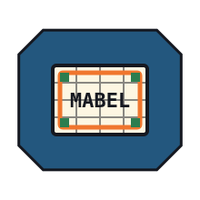
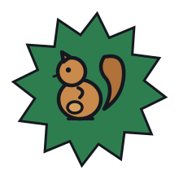
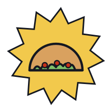

Learn from demonstration. Teleoperation feeds the data; Diffusion Policy and ACT turn it into skills; the controller deploys them — stitched into long-horizon autonomy, onboard.

A dataset-quality curation studio for MABEL imitation-learning data. It ingests recorded episodes, automatically flags the defects that poison a policy — dropped frames, out-of-sync streams, frequency drops, dead motors, missing video — grades every episode, and lets you align, blade, trim, and cull non-destructively in a Final-Cut-style timeline before exporting a clean dataset in LeRobot format. The Rerun-style 3D viewer and seven synced camera feeds are still there to review every frame.

Both consume the same observation graph and emit action chunks, so swapping a policy is a checkpoint change, not a rewrite.
A conditional denoising policy models the full distribution of expert actions, so MABEL can commit to one of several valid strategies instead of averaging them into failure. Receding-horizon action chunks keep motion smooth and reactive — the primary model for contact-rich bimanual skills.
Action Chunking with Transformers predicts a horizon of future actions from a short observation window, with temporal ensembling for stability. It is a strong, fast baseline and a natural fit for the bimanual demonstrations the teleop rig produces.
The exact, config-accurate diagram from the Trainer Studio — the same graph the real training run compiles. Switch between ACT, the Diffusion Transformer, and π₀ / π₀.₅; drag, scroll to zoom, and double-click any block to look inside down to the individual Conv / Linear / attention atoms.
Pick an architecture above, choose one of MABEL’s curated datasets, tune a few hyperparameters, and submit. Your job joins the community queue; once we review it, it trains on MABEL’s GPU and the resulting policy and learning curves are published back here. No account needed — everyone can help teach the robot.
The operator drives MABEL through the same TeleopController the live viewer and the AVP bridge use. Cut an episode with a keypress; a background thread writes it to disk while you keep working.
policies deploy with no remappingA StateProvider turns whatever the platform exposes into a uniform per-frame dict; the recorder never knows whether it’s talking to MuJoCo or to hardware.
You collect through the TeleopController that already drives the sim and the bridge — so the demonstrations are generated by the exact control path a policy will later replace.
SimStateProvider and RealStateProvider emit the same obs/action keys. Same field names in sim and on the robot is what lets a policy deploy across sim→real with no I/O remapping.
EpisodeRecorder accumulates frames and saves HDF5 on a background thread — one file per episode. Numbering auto-resumes, so you can stop and restart a session without overwriting.
Rendering seven cameras is the limit: ~15 Hz with a GPU offscreen context, ~2 Hz on a CPU-only laptop. The inspector reports the rate you actually achieved — drop cameras or resolution to hold the target.
One HDF5 file per episode, axis 0 = frame. The actuator names, camera list, and units travel with the data in the file attrs (schema_json) and dataset_meta.json.
| Field | Shape | What |
|---|---|---|
| obs/cam/<name>/rgb | JPEG | 7 cams: 2 wrist, ZED L/R, 3 body |
| obs/cam/<name>/depth | uint16 | millimetres, on a subset |
| obs/lidar | [360] | planar ranges, 1° resolution |
| obs/joint_pos·vel·torque | [59] | aligned to the actuator list |
| obs/qpos · qvel | [81]·[78] | full state (sim ground truth) |
| obs/pose/{chassis,head,palms} | [7] | world position + quaternion |
| obs/base_twist | [3] | measured (vx, vy, wz) |
| action/ctrl | [59] | the label — target for every actuator |
| teleop/* · time/* | — | palm targets, grasp, mode; sim & wall clock |
action/ctrl is a single 59-D target-position command for every actuator at once — arm, wrist, and finger joints, the neck, the lift, the torso, plus the base’s steer angles and drive velocities. That is the quantity a policy learns to predict. Observations describe the world; this one array is the supervision.
episode_0007.h5
├─ obs/
│ ├─ cam/{l_wrist,r_wrist,zed_left,…}/rgb
│ ├─ lidar [360]
│ └─ joint_pos|vel|torque [59]
├─ action/ctrl [59] # ← the target-joint label
└─ attrs: schema_json, task, fps
Global hot-keys (the viewer needn’t be focused) let one operator drive and segment at once — keep the good takes, discard the bad ones, never break flow.
| Key | Action |
|---|---|
| SPACE | start a new episode / stop & save |
| X | discard the in-progress episode |
| C | recalibrate the teleop clutch at your pose |
| M | toggle manipulation ↔ navigation |
| B | toggle lazy base-follow |
| R | reset to home + re-randomize the object |
| Q · ESC | quit (auto-discards an unsaved take) |
inspect_episode.py prints the schema, shapes, and timing — or tile-replays every camera stream. visualize_dataset.py regenerates vector-PDF diagnostics. merge_dataset.py pools several collection folders into one, renumbering episodes so sessions compose cleanly.
python collect_sim.py --name pick_cube_v1 --task "pick the blue cube" python inspect_episode.py datasets/pick_cube_v1/episode_0000.h5 --play python merge_dataset.py --out datasets/all datasets/pick_cube_v1 datasets/pick_cube_v2
Because sim and real share the identical keys and the identical control path, a dataset gathered in MuJoCo and one gathered on the robot are the same shape — and a policy trained on either speaks the same action/ctrl the robot already executes. The learning stack picks up from here.
The base that does the driving, the controller that gates every twist, and the twin the planner is proved in first are all documented today.

How a driven episode becomes training data — what is recorded, how it is segmented, and what gets thrown away.
Model families, the loss, and the harness that makes a run reproducible: fixed seeds, bundled statistics, auto-resume.
Held-out evaluation and ablations under one harness, so each design choice is backed by a measurement. Published when they are real.
Running a checkpoint on the Jetson and handing its actions to the whole-body controller — and where that still breaks.
The data engine that records the episodes and the curation studio that cleans them are running today, and the policy interface is documented.